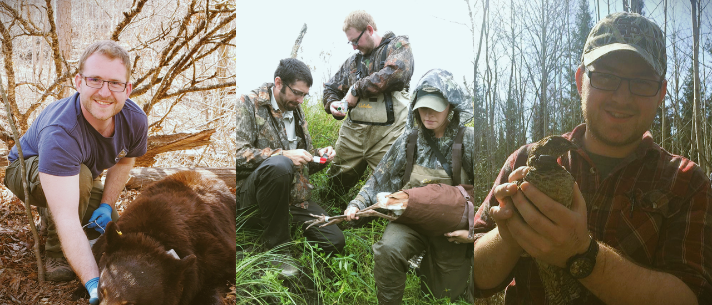

My Blog Posts
Explore my writings on ecological and geospatial data science.
Wildlife ecologist and budding geographer with a passion for applied conservation.
Hi, my name is Ben Tjepkes and I am a dedicated wildlife ecologist and geospatial practitioner interested in advancing the science behind natural resource conservation. My work focuses on using data science and geospatial techniques to research and inform landscape and endangered resource conservation. Have a look around this site to explore my past and current work.
My expertise lies in wildlife ecology and management, which has been the focal point of my professional pursuits for over seven years. Throughout my career, I have undertaken numerous research and management projects that centered on the study and conservation of wildlife and their habitats.

My passion for this field was ignited during my undergraduate studies at the University of Wisconsin-Stevens Point, where I earned my Bachelor of Science degree. Additionally, I complemented my academic knowledge through internships, independent projects, and technician experiences, which I pursued during summers and part-time throughout the academic year.
As I delved further into my wildlife career, I came to the realization that location served as a crucial factor linking the majority of ecological data. This insight sparked my interest in spatial ecology and geospatial technologies, which captivated me with their intriguing possibilities. I became deeply fascinated by the study of spatial relationships between organisms and their environment, and by the use of cutting-edge tools to map and analyze these relationships.
Driven by my growing fascination with geospatial technologies, I sought out opportunities to learn and apply Geographic Information Systems (GIS) tools in my conservation work. I enrolled in specialized courses and workshops to acquire proficiency in GIS software and its application in conservation planning, landscape ecology, and wildlife management. Through hands-on experience and project work, I developed a strong foundation in geospatial analysis and data management, and became adept at leveraging GIS tools to gain critical insights into complex ecological issues.
With a fervent desire to deepen my knowledge of the fundamental principles of geography, I am thrilled to announce my forthcoming pursuit of a Master’s degree in Geography in late 2023. This exciting opportunity presents me with the chance to delve into the underlying spatial theory that informs the cutting-edge techniques that I have employed in my ecological studies.
Through my Master’s program, I will have the opportunity to study a range of topics that span physical, human, and environmental geography, including spatial analysis, remote sensing, and cartography. I am particularly excited to delve deeper into the theoretical underpinnings of these topics, to analyze complex spatial relationships, and to explore the implications of geographic research for society and the environment. Ultimately, my goal is to synthesize my practical experience in wildlife ecology and management with the theoretical concepts I will gain in my Master’s program to continue to advance conservation efforts and contribute to the broader field of geography.